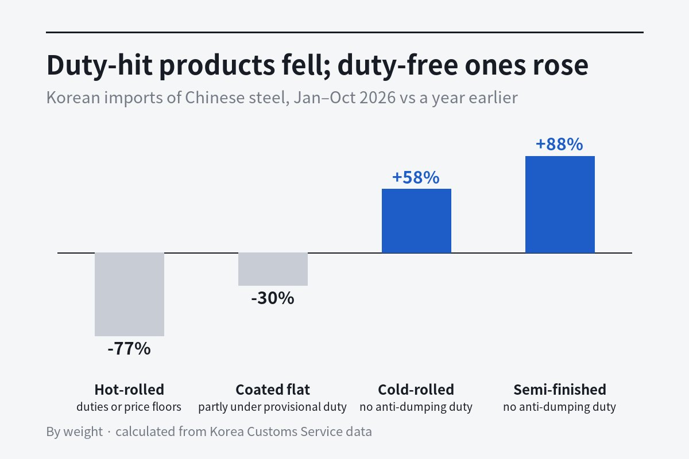

Hàn Quốc áp thuế chống bán phá giá thép Trung Quốc: thép cán nóng Việt Nam vào Hàn Quốc tăng 8,1 lần
Từ tháng 1 đến tháng 10/2026, Hàn Quốc nhập thép cán nóng từ Trung Quốc ít hơn 77% so với cùng kỳ, sau khi áp thuế chống bán phá giá. Thép cán nóng từ Việt Nam tăng từ 15 nghìn tấn lên 123 nghìn tấn. Nhật Bản chiếm 65% lượng nhập khẩu, còn thép cán nguội và phôi thép Trung Quốc, không bị áp thuế, lại tăng 58% và 88%.

Thị trường thép cán nóng Hàn Quốc đổi chủ
Với doanh nghiệp thép muốn bán vào Hàn Quốc, câu hỏi sau khi Seoul áp thuế chống bán phá giá rất đơn giản: đơn hàng đã đi đâu? Số liệu nhập khẩu tháng 1–10/2026 của Cục Hải quan Hàn Quốc trả lời khá rõ với thép cán nóng, loại thép cuộn dùng cho phụ tùng ô tô, xây dựng và sản xuất ống. Số liệu dưới đây không tính thép tấm dày.
Nhập khẩu từ Trung Quốc giảm 76,7%, từ 1.215 nghìn tấn xuống 283 nghìn tấn. Từ Nhật Bản tăng 13,2%, từ 1.004 nghìn tấn lên 1.137 nghìn tấn. Đài Loan tăng từ 51 nghìn lên 187 nghìn tấn, gấp 3,7 lần; Việt Nam tăng từ 15 nghìn lên 123 nghìn tấn, gấp 8,1 lần. Tổng lượng thép cán nóng nhập khẩu giảm 23,4%, từ 2,29 triệu xuống 1,75 triệu tấn. Đây là số liệu mã HS 7208. Chúng tôi cũng kiểm tra các mã thép hợp kim cán nóng cũng bị áp thuế (thuộc HS 7225.30, 7225.40, 7226.20 và 7226.91): hàng từ Trung Quốc giảm 72,9%, từ 69 nghìn xuống 19 nghìn tấn, tức là hàng Trung Quốc không chuyển sang các mã này.
Tóm lại, nhập khẩu từ Trung Quốc giảm 932 nghìn tấn, trong khi Nhật Bản, Đài Loan và Việt Nam cộng lại chỉ tăng khoảng 377 nghìn tấn, và tổng nhập khẩu giảm khoảng 536 nghìn tấn. Nhu cầu trong nước Hàn Quốc thay đổi cũng có thể là một nguyên nhân; số liệu thương mại không tách được hai yếu tố này. Thị phần của Trung Quốc trong thép cán nóng nhập khẩu vào Hàn Quốc giảm từ 53,1% xuống 16,1%; của Nhật Bản tăng từ 43,8% lên 64,8%.
Mức thuế gần nhau, thời điểm khác nhau
Ở Hàn Quốc, Ủy ban Thương mại điều tra bán phá giá và đề xuất mức thuế, còn Bộ Tài chính ban hành thuế bằng thông tư. Mức thuế với hai nước gần như nhau. Thuế tạm thời áp từ ngày 23/9/2025, được kéo dài thành chín tháng, đến hết ngày 22/6/2026; ngày hôm sau, 23/6/2026, thông tư chính thức áp thuế trong năm năm: 31,58%–33,43% với nhà cung cấp Nhật Bản và 28,16%–33,10% với nhà cung cấp Trung Quốc.
Các nhà máy lớn nhất của cả hai nước đều có thể tránh thuế. Cùng thông tư miễn thuế cho doanh nghiệp cam kết bán với giá không thấp hơn mức sàn, gọi là cam kết giá. Phía Nhật Bản gồm JFE Steel, Nippon Steel, Tokyo Steel và các công ty thương mại xuất khẩu thép của họ, trong đó có cả công ty thương mại vốn Hàn Quốc như SeAH Japan và POSCO International Japan. Phía Trung Quốc gồm các nhà máy lớn như Baoshan Iron & Steel, Angang, Shougang và Shagang, xuất hàng qua nhà xuất khẩu được chỉ định. Giá sàn được tính lại mỗi quý theo giá nội địa ở Trung Quốc, Nhật Bản và tỷ giá won/USD. Cam kết giá có hiệu lực cùng ngày với thuế chính thức, 23/6/2026.
Chia năm theo mốc này thì bức tranh rõ hơn. Tháng 1–5, trước khi thuế chính thức và cam kết giá có hiệu lực, thép cán nóng từ Nhật Bản giảm 4,4%, từ 588 nghìn xuống 562 nghìn tấn, còn từ Trung Quốc chỉ có 15 nghìn tấn, so với 740 nghìn tấn cùng kỳ. Đài Loan (từ 1 nghìn lên 105 nghìn tấn) và Việt Nam (từ 2 nghìn lên 58 nghìn tấn) tăng nhanh nhất nhưng chỉ bù được một phần nhỏ. Tháng 6–10 (cam kết giá áp dụng từ 23/6), hàng Nhật Bản tăng 38,1%, từ 417 nghìn lên 575 nghìn tấn, và có 268 nghìn tấn từ Trung Quốc, so với 475 nghìn tấn một năm trước. Thời điểm trùng khớp, nhưng số liệu hải quan không cho biết lô hàng nào vào theo cam kết giá, nên không chứng minh được việc miễn thuế là nguyên nhân của sự phục hồi.
Thứ tự giá cũng đảo chiều. Thép cuộn cán nóng Nhật Bản bình quân 531 USD/tấn, tăng 2,4% từ 519 USD; thép Trung Quốc tăng 15,8%, từ 489 lên 566 USD. Một năm trước, thép Trung Quốc rẻ hơn thép Nhật Bản khoảng 30 USD/tấn; trong tháng 1–10/2026, nó đắt hơn bình quân khoảng 35 USD. Đơn giá bình quân còn thay đổi theo cơ cấu sản phẩm, nên chỉ nên xem là tham khảo, không phải giá chào.
Thép cán nguội và phôi thép nằm ngoài diện áp thuế

Các sản phẩm Trung Quốc không bị áp thuế chống bán phá giá lại tăng. Thép cuộn cán nguội, tức thép cán nóng được cán mỏng thêm ở nhiệt độ thường, tăng 58,1%, từ 389 nghìn lên 615 nghìn tấn; Trung Quốc cung cấp 95,5% lượng thép cán nguội Hàn Quốc nhập khẩu, dù tổng nhập khẩu thép cán nguội của Hàn Quốc cũng tăng 63,4%. Bán thành phẩm như phôi dẹt (slab) và phôi vuông (billet) từ Trung Quốc tăng 88,4%, từ 318 nghìn lên 599 nghìn tấn, nhưng bán thành phẩm Nhật Bản giảm 14,1%, từ 706 nghìn xuống 606 nghìn tấn, nên tổng nhập khẩu bán thành phẩm của Hàn Quốc chỉ tăng 7,9%. Phôi dẹt là nguyên liệu để nhà máy cán thành thép cuộn cán nóng và thép tấm; số liệu không cho biết ai mua và làm ra sản phẩm gì.
Một năm trước, thép cán nguội Trung Quốc có giá 585 USD/tấn, đắt hơn 20% so với thép cán nóng Trung Quốc ở mức 489 USD. Trong tháng 1–10/2026, giá bình quân là 567 USD, gần như bằng mức 566 USD của thép cán nóng, chủ yếu vì thép cán nóng Trung Quốc đắt lên. So với giá bình quân của toàn bộ thép cán nóng nhập khẩu, tăng từ 504 lên 538 USD, mức chênh của thép cán nguội thu hẹp từ 16% xuống 5%.
Thép mạ kẽm đi theo hướng khác. Tháng 4/2026, Ủy ban Thương mại đề xuất thuế tạm thời 22,34%–33,67% với thép cán nguội mạ kẽm Trung Quốc dày dưới 4,75 mm. Thép tấm mạ từ Trung Quốc giảm từ bình quân 159 nghìn tấn mỗi tháng trong tháng 1–5 xuống 14 nghìn tấn trong tháng 7, rồi tăng lại 52 nghìn tấn trong tháng 9 và 42 nghìn tấn trong tháng 10. Cả giai đoạn tháng 1–10 giảm 30,3%, từ 1,41 triệu xuống 980 nghìn tấn. Nhóm hải quan này gồm cả hàng bị áp thuế lẫn hàng không bị áp thuế, nên chỉ nhìn số liệu thì không biết loại nào đã quay lại. Thép tấm mạ từ Việt Nam tăng từ 326 tấn lên 26.760 tấn, vẫn còn nhỏ so với Trung Quốc.
Sản phẩm nào có thể bị chặn tiếp
Ngày 23/10, Ủy ban Thương mại đề xuất áp thuế năm năm 22,34%–33,67% với thép cán nguội mạ kẽm Trung Quốc, kèm cam kết giá cho 10 nhà xuất khẩu; Bộ trưởng Tài chính chưa quyết định. Ngày 17/9, ủy ban đề xuất thuế tạm thời 25,08%–27,96% với thép thanh Trung Quốc, và ngày 8/10 mở điều tra ống thép không hàn Trung Quốc, dự kiến có kết luận sơ bộ vào tháng 2/2027.
Hàn Quốc cũng mở rộng quy định chống lẩn tránh thuế, điều mà doanh nghiệp Việt Nam cần để ý. Nghị định thi hành Luật Hải quan, văn bản của Tổng thống quy định cách áp dụng luật, được sửa ngày 28/11/2025: thay đổi hình dạng, kiểu dáng hay công dụng của sản phẩm bị áp thuế mà không thay đổi đặc tính cơ bản thì bị coi là lẩn tránh, kể cả khi mã HS thay đổi. Lắp ráp hoặc gia công đơn giản ở nước thứ ba đối với nguyên liệu từ nước bị áp thuế cũng bị tính là lẩn tránh. Nếu Ủy ban Thương mại kết luận có lẩn tránh, mức thuế tương tự có thể được áp cho cả những hàng đó. Số liệu thương mại không cho biết lô thép cán nguội hay phôi thép nào thuộc diện này; danh sách trong nghị định cũng không bao gồm gia công trong lãnh thổ Hàn Quốc, chẳng hạn nhà máy Hàn Quốc cán phôi nhập khẩu.
Với nhà cung cấp, việc vào được thị trường Hàn Quốc giờ phụ thuộc vào cam kết giá và cách phân định phạm vi sản phẩm nhiều hơn là mức thuế danh nghĩa. Với nhà máy thép Hàn Quốc, từ khi thuế có hiệu lực, thép cuộn cán nóng nhập khẩu khan hơn và thép Trung Quốc đắt hơn, trong khi thép cán nguội và phôi thép không bị áp thuế lại nhập nhiều hơn. Số liệu theo nước và theo sản phẩm trong bài có thể cập nhật khi có số liệu chính thức tháng 11 vào giữa tháng 12; số liệu sơ bộ ngày 1–20/11 công bố lúc 7 giờ sáng 23/11 giờ Hà Nội không chia theo nước hay sản phẩm.
Xem thêm số liệu
Cập nhật theo số liệu của Cục Hải quan Hàn Quốc vào ngày 1, 11 và 21 hằng tháng.
Nguồn
- Cục Hải quan Hàn Quốc, kim ngạch xuất nhập khẩu theo mặt hàng và theo nước (API Cổng dữ liệu công), HS 7207, 7208, 7209, 7210; Trung Quốc, Nhật Bản, Đài Loan, Việt Nam; tháng 1–10 năm 2025 và 2026 (mở trong thẻ mới)
- Cục Hải quan Hàn Quốc, kim ngạch xuất nhập khẩu theo mặt hàng (API Cổng dữ liệu công), HS 7207, 7208, 7209, 7210, toàn Hàn Quốc, tháng 1–10 năm 2025 và 2026 (mở trong thẻ mới)
- Trung tâm Thông tin Pháp luật Quốc gia Hàn Quốc: Quy tắc áp thuế chống bán phá giá đối với thép cán nóng carbon và thép hợp kim khác xuất xứ Nhật Bản và Trung Quốc (Thông tư Bộ Tài chính, Kinh tế số 35, 23/6/2026) (mở trong thẻ mới)
- Trung tâm Thông tin Pháp luật Quốc gia Hàn Quốc: Nghị định thi hành Luật Hải quan, Điều 71-2 (các hành vi lẩn tránh thuế chống bán phá giá) (mở trong thẻ mới)
- Bộ Công nghiệp và Thương mại Hàn Quốc: Ủy ban Thương mại kết luận cuối cùng vụ điều tra bán phá giá thép cán nguội mạ kẽm và bản in offset Trung Quốc (23/10/2026) (mở trong thẻ mới)
- Bộ Công nghiệp và Thương mại Hàn Quốc: Kết luận điều tra bán phá giá thép hình H và thép thanh Trung Quốc (17/9/2026) (mở trong thẻ mới)